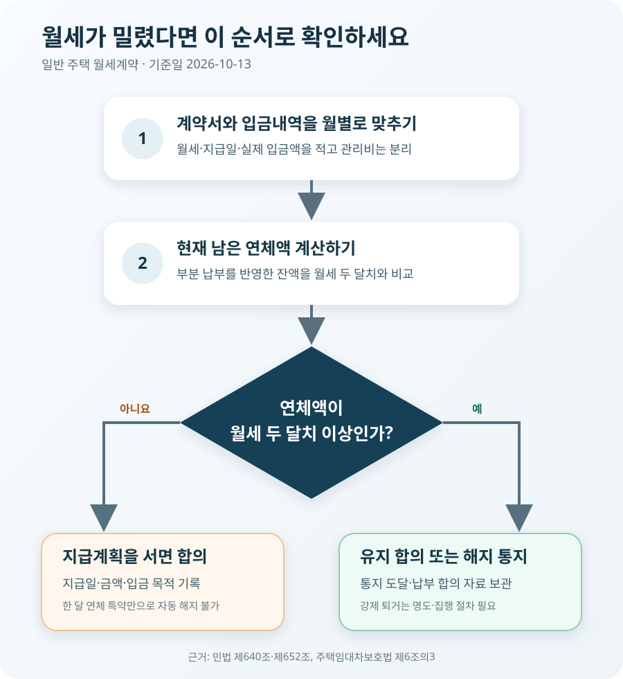

월세를 두 달 밀리면 보증금이 남아 있어도 계약이 끝날까?
일반적인 주택 월세계약에서는 밀린 월세의 합계가 두 달치에 이르면 집주인이 계약을 해지할 수 있습니다. 두 달을 연속으로 밀려야 하는 것은 아니며, 보증금이 남아 있어도 세입자가 일방적으로 “거기서 빼 달라”고 하면서 월세 지급을 멈출 수는 없습니다. 다만 한 달만 연체하면 자동 해지된다는 특약이나, 해지 의사표시 없이 계약이 저절로 끝난다는 조항처럼 세입자에게 불리하게 법 기준을 낮춘 약정은 효력이 없습니다.
‘두 번 연체’가 아니라 ‘두 달치 금액’입니다
민법 제640조는 건물 임차인의 차임연체액이 2기의 차임액에 달하면 임대인이 계약을 해지할 수 있다고 정합니다. 월세를 매달 내는 계약이라면 2기는 보통 월세 두 달치입니다. 월세가 70만원이면 현재 남아 있는 연체액이 140만원에 이르렀는지를 보는 식입니다.
여기서 ‘기’는 지급 주기를 뜻합니다. 매월 지급이면 두 달치, 1년에 한 번 지급하기로 했다면 두 번의 연 지급액이 기준입니다. 법제처 찾기쉬운 생활법령도 연체가 연속될 필요는 없다고 설명합니다. 8월분을 밀리고 9월분은 냈지만 10월분을 다시 밀려 합계가 두 달치라면 기준에 이를 수 있습니다.
| 상황 | 월세 70만원 기준 연체액 | 일반 주택의 해지 기준 |
|---|---|---|
| 이번 달 70만원을 전부 못 냄 | 70만원 | 아직 2기분에 이르지 않음 |
| 두 달 연속 전부 못 냄 | 140만원 | 2기분에 이르므로 해지 가능 |
| 첫 달 70만원, 다음 달 35만원 미납 | 105만원 | 아직 2기분 미만 |
| 8월 70만원·10월 70만원 미납 | 140만원 | 연속이 아니어도 해지 가능 |
| 140만원 연체 뒤 30만원 납부 | 110만원 | 통지 시점과 납부 합의 확인 필요 |
관리비까지 합쳐 ‘두 달치’라고 계산해서도 안 됩니다. 계약서상 월 차임과 별도로 부과되는 전기·수도·관리비는 성격과 약정이 다릅니다. 월세 70만원과 관리비 10만원인 집에서 관리비까지 포함한 160만원을 해지 기준으로 단정하지 말고, 먼저 계약서의 차임 금액과 실제 입금액을 나눠 적어야 합니다.
보증금이 충분해도 월세가 자동으로 빠지지는 않습니다
보증금은 계약이 끝나 집을 돌려줄 때까지 연체 월세, 훼손에 따른 손해배상금처럼 임대차에서 생기는 채무를 담보합니다. 계약 종료 후에는 집주인이 정산할 채무를 보증금에서 공제하고 나머지를 반환하는 것이 보통입니다. 그러나 계약이 진행되는 동안 세입자가 보증금을 월세 통장처럼 쓸 권리가 생기는 것은 아닙니다.
법제처의 ‘임차보증금에서 밀린 월세를 공제해 주세요’ 생활법령 사례도 임차인이 보증금 공제를 요구하더라도 임대인이 받아들일 의무는 없다고 설명합니다. 따라서 보증금 3천만원이 남아 있고 월세가 70만원이라고 해도, “어차피 보증금에서 빼면 된다”며 두 달치 월세를 내지 않으면 계약 해지 위험이 생깁니다.
반대로 집주인이 계약 중 임의로 보증금을 깎아 놓았다고 통보하는 것만으로 모든 정산이 끝나는 것도 아닙니다. 실제 지급내역과 합의 내용을 기준으로 연체액을 계산하고, 계약 종료 때 미납 차임·원상회복비 등을 보증금에서 공제한 명세를 서로 확인해야 합니다.

기준에 이르면 ‘해지할 수 있다’는 뜻이지 자동 종료는 아닙니다
연체액이 두 달치에 이르면 집주인에게 해지권이 생깁니다. 계약서에 “월세를 두 번 밀리면 별도 통지 없이 자동 해지된다”고 적혀 있어도, 세입자에게 불리하게 해지 요건을 완화한 약정은 민법 제652조에 따라 효력이 없을 수 있습니다. 집주인은 계약을 끝내겠다는 의사를 세입자에게 표시하고, 그 통지가 도달했음을 입증할 자료를 남기는 편이 안전합니다.
문자나 메신저만으로도 상대방이 내용을 확인했다는 자료가 있다면 의사표시 여부가 문제 될 수 있지만, 분쟁이 예상되면 내용증명처럼 발송 내용과 도달을 확인할 수 있는 방법을 함께 씁니다. 통지서에는 계약 주소, 월세액, 미납 월과 금액, 입금내역, 해지한다는 의사, 퇴거·열쇠 인도 요청일을 구체적으로 적습니다.
집주인이 해지했다고 해서 세입자의 짐을 밖으로 내놓거나 현관 비밀번호를 바꾸고 전기·수도를 끊을 수 있는 것은 아닙니다. 세입자가 나가지 않으면 명도소송과 강제집행 같은 법적 절차가 필요합니다. 반대로 세입자도 해지 통지를 무시한 채 계속 거주하면 월세 상당액과 지연손해금, 소송·집행 비용 문제가 커질 수 있으므로 통지 내용을 받은 날 바로 연체액과 협의 가능성을 확인해야 합니다.
한 달만 연체했는데 해지한다는 통지를 받았다면 계약서와 입금내역을 대조해 현재 연체액을 계산하세요. “한 번만 밀려도 해지” 조항은 법정 기준보다 세입자에게 불리해 무효가 될 수 있습니다. 다만 월세 외에 무단 전대, 주택 훼손처럼 별도의 해지 사유가 있다면 차임 연체만으로 판단할 수 없습니다.
두 달치 연체는 계약갱신요구에도 영향을 줍니다
주택임대차보호법은 세입자에게 한 차례 계약갱신을 요구할 권리를 주지만 예외도 정합니다. 주택임대차보호법 제6조의3 제1항 제1호에 따르면 임차인이 2기의 차임액에 달하도록 연체한 사실이 있으면 임대인은 갱신을 거절할 수 있습니다.
계약을 즉시 해지하는 문제와 만료 때 갱신을 거절하는 문제는 나눠 봐야 합니다. 현재 연체액을 모두 갚아 계약이 계속되더라도, 과거의 두 달치 연체 사실이 갱신요구 단계에서 쟁점이 될 수 있습니다. 따라서 급한 돈을 마련해 연체액만 입금했다고 모든 불이익이 사라졌다고 단정하면 안 됩니다.
다만 실제로 어느 달에 얼마가 미납됐고 이후 어떤 합의를 했는지는 자료로 확인해야 합니다. 집주인이 장기간 분할납부를 받아들이고 새 지급일을 정했다면 기존 연체와 변경 합의의 관계가 문제 될 수 있습니다. 입금 메모만 남기지 말고 “기존 미납액 중 얼마를 언제까지 나눠 낸다”는 합의와 계약 유지 여부를 함께 적으세요.
부분 납부가 섞였다면 날짜별 잔액표를 만드세요
보증금 2천만원, 월세 80만원, 매월 5일 지급인 계약을 가정해 보겠습니다. 세입자는 7월분을 내지 못했고 8월 20일에 50만원, 9월 5일에 80만원을 송금했습니다. 송금액을 어느 월분에 충당했는지 별도 합의가 없다면 단순히 ‘두 번 입금했다’고 세지 말고 날짜별로 발생한 차임과 지급액을 맞춰 봐야 합니다.
| 날짜 | 발생·지급 | 계산상 남은 연체액 | 두 달치 160만원과 비교 |
|---|---|---|---|
| 7월 5일 | 7월분 80만원 발생, 미납 | 80만원 | 기준 미만 |
| 8월 5일 | 8월분 80만원 발생 | 160만원 | 기준 도달 |
| 8월 20일 | 50만원 지급 | 110만원 | 기준 미만으로 감소 |
| 9월 5일 | 9월분 80만원 발생 후 80만원 지급 | 110만원 | 그대로 기준 미만 |
이 표는 계산 방법을 보여 주는 단순 예시입니다. 실제로는 집주인이 8월 5일 연체액 160만원 상태에서 이미 유효하게 해지를 통지했는지, 8월 20일 돈을 받으면서 계약을 유지하기로 합의했는지에 따라 판단이 달라질 수 있습니다. 뒤늦게 일부를 입금했다고 이미 도달한 해지 통지의 효력이 자동으로 사라진다고 생각해서는 안 됩니다.
지급액의 충당 순서도 다툼이 생길 수 있습니다. 이자·비용·원금 또는 오래된 월세와 최근 월세 중 어디에 먼저 넣을지를 당사자가 합의했다면 그 내용을 확인하고, 합의가 없다면 민법상 변제충당 규정이 문제 될 수 있습니다. 여러 달 부분 납부가 섞였거나 지연손해금까지 청구한다면 날짜별 원장을 만든 뒤 법률상담을 받는 편이 안전합니다.
세입자는 연락을 피하지 말고, 집주인은 숫자부터 맞추세요
세입자가 월세를 제때 내기 어렵다면
- 현재 연체액을 직접 계산합니다. 계약서의 월세·지급일과 계좌이체 내역을 월별로 맞춥니다. 관리비는 별도 칸에 둡니다.
- 두 달치가 되기 전에 알립니다. 지급 가능한 날짜와 금액을 막연한 약속이 아니라 숫자로 제안합니다.
- 분할납부 합의를 서면으로 남깁니다. 계약 유지 여부, 각 지급일, 보증금 차감 여부와 잔액을 함께 적습니다.
- 입금 메모와 확인을 남깁니다. ‘7월 월세 중 50만원’처럼 목적을 표시하고 집주인의 수령 확인을 보관합니다.
- 해지 통지를 받으면 바로 대응합니다. 연체액이 틀렸다면 입금내역을 제시하고, 맞다면 퇴거·정산 또는 계약 유지 합의를 서둘러 협의합니다.
소득이 갑자기 줄었다면 지자체 주거복지센터, 주민센터, 복지로의 주거급여·긴급복지·청년월세 지원 요건도 확인할 수 있습니다. 지원 신청이 곧바로 연체를 없애는 것은 아니므로, 신청 사실만 믿고 집주인과의 지급 협의를 미루면 안 됩니다.
집주인이 미납 사실을 확인했다면
- 월별 원장을 보냅니다. 월세 발생일, 받은 금액, 미납액과 합계를 표로 만들어 세입자에게 확인을 요청합니다.
- 계속 받을지 끝낼지 정합니다. 분할납부를 받아 계약을 유지할지, 법정 기준에 이른 뒤 해지할지 모호하게 두지 않습니다.
- 통지 내용을 구체적으로 적습니다. 계약·주택·미납액을 특정하고 이행 요구인지 해지 의사표시인지 구분합니다.
- 자력으로 퇴거시키지 않습니다. 잠금장치 변경이나 짐 반출 대신 인도 합의 또는 법적 절차를 이용합니다.
- 보증금 정산표를 준비합니다. 퇴거일의 연체 차임과 공과금, 합의된 원상회복비, 반환할 보증금을 항목별로 제시합니다.
당사자끼리 계산이 맞지 않거나 계약 유지·종료를 합의하기 어렵다면 주택임대차분쟁조정위원회를 검토할 수 있습니다. 이곳은 국토교통부 산하 한국부동산원과 LH 등이 운영하며 차임, 보증금 반환, 계약 종료 같은 주택임대차 분쟁을 조정합니다. 계약서, 입금내역, 문자와 연체 계산표를 준비해야 상담과 조정이 빨라집니다.
자주 묻는 질문
월세를 하루만 늦어도 한 번 연체로 세나요?
지급일 다음 날부터 미지급 상태는 생기지만, 계약 해지 기준은 지각 횟수가 아니라 남아 있는 연체액이 2기분에 달했는지입니다. 매번 며칠 늦었어도 다음 월세 발생 전에 전액을 냈다면 그 사실만으로 두 달치 연체액이 쌓인 것은 아닙니다. 다만 반복 지연에 따른 지연손해금이나 신뢰 훼손 문제는 별도로 남을 수 있습니다.
두 달치가 된 날 바로 전액을 보내면 괜찮나요?
집주인의 해지 통지가 도달하기 전에 연체액을 모두 갚았는지, 이미 해지 통지가 있었는지, 돈을 받으면서 계약을 유지하기로 했는지를 확인해야 합니다. 입금만 하고 끝내지 말고 현재 계약이 유지되는지 서면 답변을 받는 편이 안전합니다.
집주인이 월세를 받지 않으면서 연체를 만들면 어떻게 하나요?
계좌가 바뀌었거나 수령을 거절한다면 문자·내용증명으로 지급 의사와 방법을 확인하고, 필요하면 변제공탁을 검토해야 합니다. 단순히 돈을 따로 보관하는 것만으로 지급이 끝났다고 단정할 수 없으므로 법원 공탁소나 법률전문가에게 절차를 확인하세요.
상가도 두 달치가 기준인가요?
아닙니다. 상가건물 임대차는 상가건물 임대차보호법 제10조의8에 따라 3기의 차임액 연체가 해지 기준입니다. 이 글은 일반적인 주택 월세계약을 설명하므로 상가·사무실 계약에 그대로 적용하면 안 됩니다.
등록임대주택도 똑같나요?
등록민간임대주택이나 공공임대주택은 적용 법률과 표준임대차계약서의 해지 사유가 별도로 정해질 수 있습니다. 계약서에 임대사업자 등록 여부가 표시돼 있거나 임대인이 LH·SH 등 공공사업자라면 일반 주택 사례로 판단하지 말고 해당 계약서와 운영기관 기준을 먼저 확인하세요.
공식 자료
- 국가법령정보센터 — 민법 제640조(차임연체와 해지)
- 국가법령정보센터 — 민법 제652조(강행규정)
- 국가법령정보센터 — 주택임대차보호법 제6조의3(계약갱신 요구 등)
- 법제처 찾기쉬운 생활법령 — 차임의 지급 및 연체
- 법제처 찾기쉬운 생활법령 — 임차보증금에서 밀린 월세 공제 사례
- 대한민국 법원 — 연체차임과 임대차보증금 정산 관련 판결 안내
정보 기준일: 2026-10-13. 이 글은 개인 간 일반 주택 월세계약의 법정 기준을 설명한 정보이며 개별 법률 자문이 아닙니다. 등록민간임대주택·공공임대주택, 월세 지급 주기가 월 단위가 아닌 계약, 수령 거절·공탁, 별도 분할납부 합의, 무단 전대·훼손 등 다른 해지 사유가 있으면 결론이 달라질 수 있습니다. 해지 통지나 퇴거·보증금 정산 전에 계약서와 전체 입금내역을 바탕으로 주택임대차분쟁조정위원회 또는 법률전문가에게 확인하세요.
계약과 이사 정산을 함께 확인하세요
- 전세계약 체크리스트월세·지급일·특약 다시 확인
- 이사 체크리스트퇴거일과 보증금 정산 자료 준비